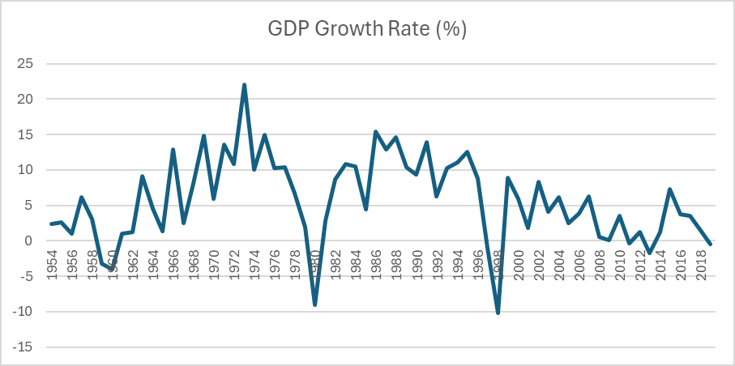
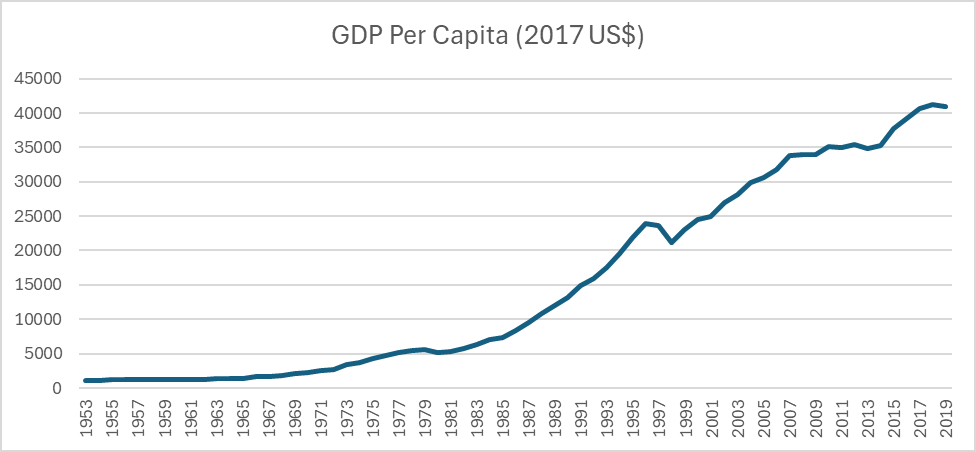

The Dissertation / Chapter I
Chapter I
The Trajectory of Growth
The temporal evolution of the Gross Domestic Product for the Republic of Korea provides a compelling quantitative descriptor of the substantial macroeconomic advancements achieved. An examination of year-on-year GDP growth rates, spanning the epoch from circa 1960 CE to the present, reveals a mean annualized expansionary velocity exceeding 5.8% — a rate that significantly surpasses the normative growth envelope of 2–3% typically considered optimal for mature, industrialized economies (Amadeo, 2023).
As of the fiscal annum 2019, the ROK exhibited a real GDP quantum assessed at approximately 2.09 × 1012 USD, thereby constituting the 14th largest economic system on a global scale, according to the Penn World Table dataset (Feenstra, Inklaar, & Timmer, 2015).

This massive growth can be partly explained by strategic policy shifts. In the 1960s and 70s, the government-led economy was faltering: high inflation, overinvestment in chemical industries, and the second oil crisis of the late 70s prompted a decisive switch to market-led growth strategies — promoting exports, limiting imports, and opening the country to foreign investment (Lee, 2013). Ultimately, South Korea became one of the top ten exporters in the world, with exports comprising 56.3% of GDP in 2012, up from 25.9% in 1995.

“Right then, pull up a pew and pour yourself a nice cuppa. From 1968 onwards, things took a rather spiffing turn! GDP per capita shot up, almost like one of those newfangled rockets. Labour productivity per worker more than doubled, I tell you — from $33,901 in 1991 to a truly stonking $77,442 in 2023. One imagines Her Majesty would be quite pleased with such diligence!”
— a distinguished correspondent of the author
The ascent was not without ripples. The 1997–98 Korean Financial Crisis — part of a larger regional convulsion — saw GDP per capita shrink from $23,627 in 1997 to $21,224 the year after: a 10.2% contraction. The 2008 global recession likewise flattened per-capita output until 2009. Yet growth reignited each time, clawing back to pre-crisis levels within roughly two years, while labor productivity continued its ascent undeterred.
“Hark, mortals: a mere squabble amongst fledgling dragons. A 10.2% contraction! Pah! Barely enough to singe one's scales.”
— an unusually ancient peer reviewer
Contrast this with the northern neighbor, whose economy dwindled after the collapse of its Soviet patron in 1991. Committed to Juche self-reliance and a command economy, North Korea's GDP is estimated at a mere $40 billion as of 2015 — 138th in the global ranking (CIA, 2025).
Growth accounting frames the arc precisely: from 1970 to 1990 GDP swelled by 11.02% per year; between 1990 and 2020 the pace settled to a more sustainable 4.61%. This pattern — a roaring inferno followed by a steady hearth-fire — aligns with convergence theory: smaller, hungrier economies often grow faster than mature, well-fed ones.